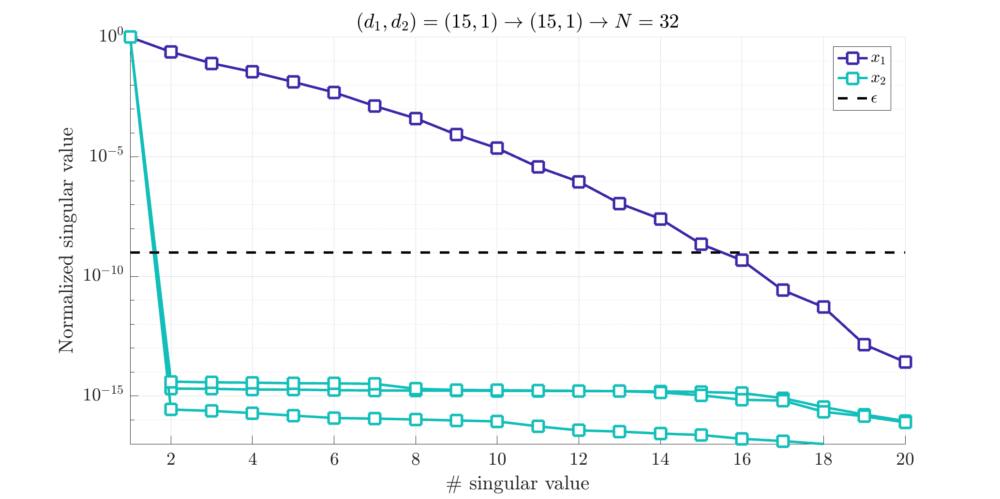
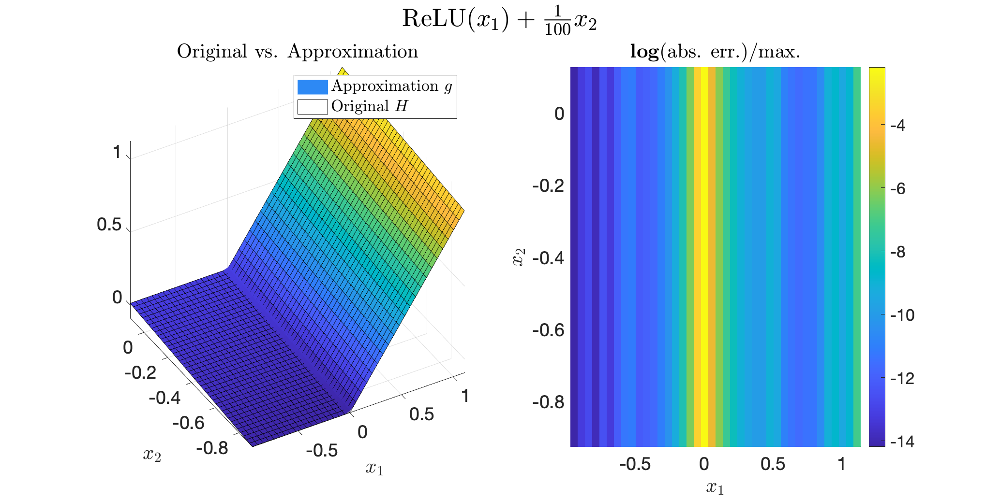

Irrational example
Define a test model and interpolation points
Start by defining your modelH
$$
H(x_1,x_2) = \frac{1}{2}(x_1+|x_1|)+\frac{1}{10}x_2.
$$
This is done here by using the mlf.examples routine that embeds multiple examples.
We also define the interpolation points along each variable.
To fit the Loewner framework, the interpolation points are split into column p_c and row p_r sets.
Notice here that the above model is rational along $x_1$ and $x_2$.
Notice here that the above model is irrational and discontinuous one along $x_1$ and polynomial along $x_2$.
CAS = 1;
[H,infoCas] = mlf.examples(CAS);
n = infoCas.n;
p_c = infoCas.p_c;
p_r = infoCas.p_r;
Build tensor
Then, the tensorized datatab are constructed. Here leading to a 2-D tensor, and more specifically
$$
\mathcal T_2^{\otimes} \in \mathbb R^{40\times 40}
$$
[y,x,dim] = mlf.make_tab_vec(H,p_c,p_r);
tab = mlf.vec2mat(y,dim);
Use the mLF (Alg. 1: direct [A/G/P-V, 2025])
Now we are ready to build the approximation. In what follows, theopt.ord_tol set to $10^{-9}$, is used as the threshold for the single variable order detection.
Then the opt.ord_show is used to show the single variable normalized singular value drop (it may help to choose the different orders).
The opt.method_null option is used to chose the null space computation method (here SVD with hiest magnitude normalization).
The opt.method is used to select either the recursive ('rec') or full ('full') method.
The algorithm computes g, a handle function; and iloe, gathering some informations about the process and notably the interpolation points $(\lambda_1,\lambda_2)$, the evaluation values $w$ and the barycentric weights $c$.
More specifically, the rational approximation takes the following form:
$$
g(x_{1},x_{2}) =
\dfrac{\sum_{j_1=1}^{k_1}\sum_{j_2=1}^{k_2}\dfrac{c(j_1,j_2)w(j_1,j_2)}{(x_{1}-\lambda_{1}(j_1))(x_{2}-\lambda_{2}(j_2))}}{\sum_{j_1=1}^{k_1}\sum_{j_2=1}^{k_2} \dfrac{c(j_1,j_2)}{(x_{1}-\lambda_{1}(j_1))(x_{2}-\lambda_{2}(j_2))}}
$$
opt.ord_tol = 1e-9; % SVD tolerance
opt.ord_show = true; % show order detection
opt.method_null = 'svd0'; % null space method
opt.method = 'rec'; % full or recursive method
[g,iloe] = mlf.alg1(tab,p_c,p_r,opt);
opt.ord_tol allows to adjust this (see also opt.ord_obj).

Normalized singular values of some of the single variable Loewner matrices.
Evaluate the resulting approximate
Now we compare the original and approximate functions with 1000 random draw. The result should be small. Machine precision is not alway achieved due to the irrational contribution.for i = 1:1e3
x_try = rand(1,2);
err(i) = abs(H(x_try)-g(x_try));
end
mean(err)
H and approximate g functions along $x_1$ and $x_2$ .
The frames show the value (left) and the mismatch (right).

Got to the KST form
To go furhter, it is also possible to derive the single variable vector functions $\Phi_1(x_1)$ and $\Phi_2(x_2)$, linking the Loewner framework to the KST, leading the following equivalent formulation of the approximant: $$ g(x_1,x_2) = \dfrac{\sum_{\text{rows}}w\cdot \Phi_1(x_1)\cdot \Phi_2(x_2)}{\sum_{\text{rows}}\Phi_1(x_1)\cdot \Phi_2(x_2)} $$[Bary,Lag,Cx] = mlf.decoupling(iloe);
PHI1 = Bary{1}.*Lag{1};
PHI2 = Bary{2}.*Lag{2};
num = simplify(sum(iloe.w.*PHI1.*PHI2));
den = simplify(sum(PHI1.*PHI2));
vpa(simplify(num/den),3)
vpa(PHI1,3)
vpa(PHI2,3)